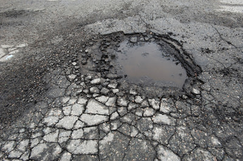
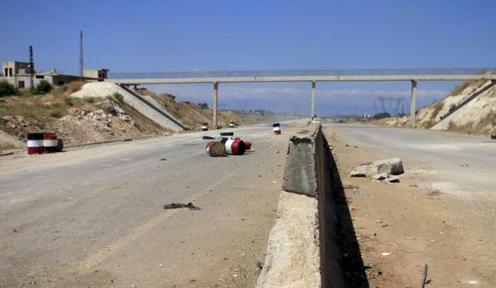
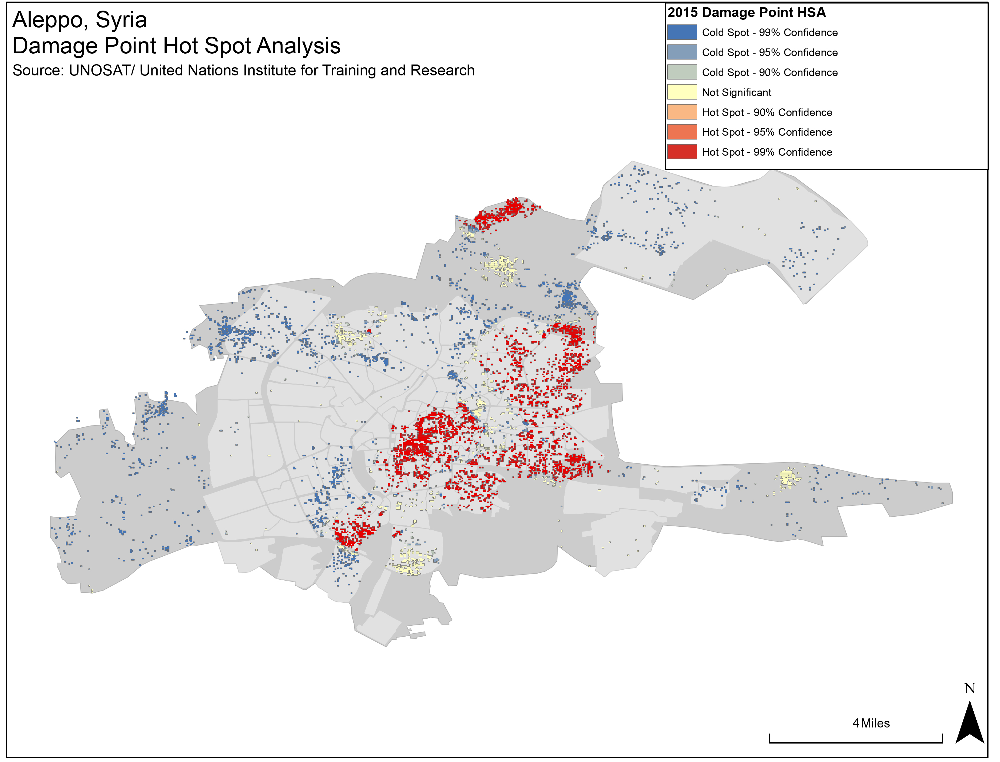
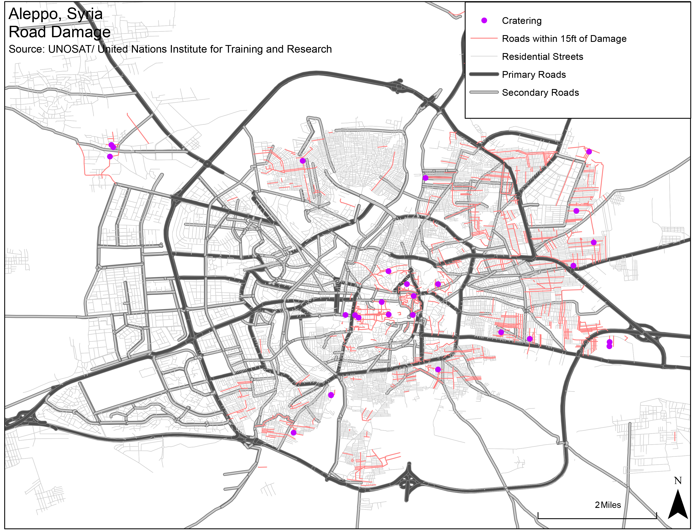
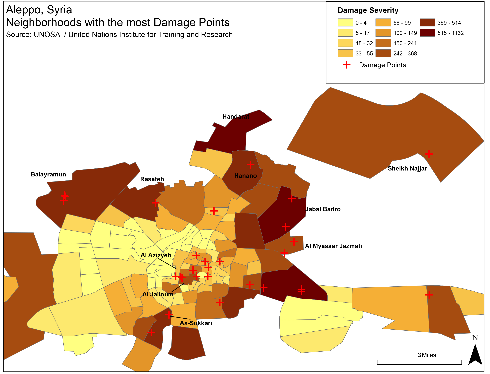
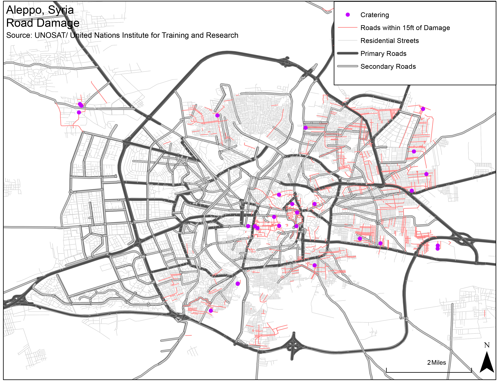
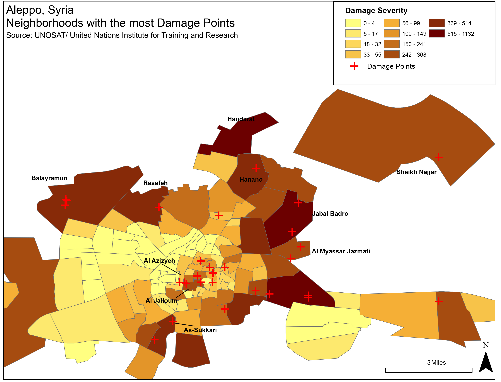

Roads and Accessibility
Driving in Syria Before the War - "Driving Aleppo ﺣﻠﺐ - Syria سوريا". YouTube video, 03:20. Posted [May 2014].
Prior to the conflict, Syria’s road network was highly trafficked but poorly maintained and unsafe due to poor construction, operation, and maintenance. Heavy loads from freight trucks and weathering over time caused numerous cracks and potholes throughout Syria’s road network. In addition to these variables, poor initial construction and poor maintenance of Syrian roads has led to numerous fatalities and accidents throughout the country according to local news reports from 2006.
1
In this study, I obtained background transportation research from the University of Damascus in order to study the road network of Syria. I then conducted a spatial analysis of current damage in Aleppo using data from the United Nations- UNITAR’s Operational Satellite Applications Programme (UNOSAT).

According to a 2009 report by Tamir Karkout of the Arab Reporters for Investigative Journalism (ARIJ), the "Roads of Death" consist of the Damascus-Aleppo (M5), Al Raqqa-Aleppo (M4) and Damascus-Al Suwayda (110) highways.
2
This morbid title given to this transportation system was due to the high casualty rate and accident rates of vehicles prior to the conflict. In 2008, car accidents killed approximately 2,500 Syrian citizens. Of these accidents, 446 were due to existing road damage. For the purpose of this study, I examined the Al Riqqa-Aleppo and Damascus- Aleppo routes as they are most relevant to the city of Aleppo.
The Damascus- Aleppo Highway (also known as the M5), is a 355 kilometer highway that runs North-South from the border of Jordan to Aleppo, crossing nearly the entire country. The road has four lanes, with two lanes in each direction. The Al Raqqa- Aleppo Highway (M4) is a 192 kilometer highway that travels from East to West between the two cities. This road is also four lanes in width.
Historically, travel along these routes has been dangerous due to heavy loads and poor maintenance. According to reports conducted by Dr Andrew Saoud of the Department of Transport and Communications Engineering, Faculty of Civil Engineering at the University of Damascus, the M4 and M5 have long and wide cracks in the road.
2
Although these highways are actively used, they should be out of service in areas that have been over stressed due to excess loads from large trucks and buses. Some areas of the highway are built on uneven surfaces. On the Damascus- Al Suwayda area of the highway there is an 8km stretch of 6.5% gradient slope. The international standard for gradient is 6% on a maximum distance of 3km. Travel on steep slopes is extremely dangerous, especially to large trucks, due to the chance of rollover, the lack of visibility of oncoming traffic, and faster speeds of vehicles moving downhill.In addition to this general wear and tear from heavy loads, roads were poorly planned and constructed. Both the M4 and M5 have areas that pass through residential areas and in many cases unorganized junctions according to the 2008 study. Faults in the roads are due to the absence of paved shoulders which are used to provide safety for vehicles. Furthermore, these roads lack well defined lane markings, direction signals and other centerline barriers that act as primary safety features for most roads.
Ingress and Egress
Road use out of Aleppo has been extensive due to the ongoing conflict throughout the country. The two closest refugee camps to Aleppo are located to the West and North along the border of Turkey. Primary egress to refugee camps of outside Syria are located Westbound along Highway 62. Those persons seeking refuge must travel approximately 21 kilometers to reach the town of Qah. In Qah numerous nonprofit organizations have assisted in accommodating new refugees and their families. A secondary egress route is located to the North along Highway 214. This route provides means of egress to refugee camps located in Kilis. Kilis has been host to one of the largest refugee camps since the beginning of the conflict and is located approximately 27 kilometers from Aleppo.
As mentioned earlier in this study, the highways used to travel into Aleppo are the M4 and M5 if coming from the East or South. The M4 and M5 Highways serve as the fastest ways to enter Aleppo from Damascus and Al Raqqa. To access Aleppo from the North, travelers can use route 214. Arriving into Syria by vehicle requires traveling through many contested areas due to the conflict.
Many roads are controlled by both Syrian rebels and government forces via checkpoint. In addition to these checkpoints road damage from various munitions makes access to some neighborhoods difficult. In this next section I conducted a spatial analysis of Aleppo’s road network and how it has been affected by cratering munitions.
Road Swimming. AFP news agency. "Craters from barrel bombs turned into street pools in Aleppo". YouTube video, 00:51. Posted [Jul 2014].
Methodology
Using the Aleppo “roads” and the UNOSAT “damage points” shapefiles from 2015, I used ArcGIS to spatially analyze which roads, the type of roads, and the overall trafficked areas of Aleppo that were affected the most by munitions. Munitions are explosive devices used during conflict that cause variable physical damage to persons and property. Munitions can be improvised explosive devices or other highly explosive and cratering type bombs.
To determine which neighborhoods in Aleppo were most affected by munitions, I ran an optimized hotspot analysis to determine significant areas where cratering occurred. I then used the spatial join tool in order to merge the UNOSAT damage points and the Neighborhoods shapefile. Doing a spatial join gave me a polygon file with a “count” field within the new shapes database. I then calculated the acreage within each neighborhood geometry in order normalize damage sites by neighborhood. When categorized, this shapefile reflects color coded neighborhoods with lighter spots showing less damage and darker neighborhoods showing more damage.




The next step was to determine which roads were actually cratered by munitions. To do this, I ran a select by location to search for damage points within a 15 foot buffer of all the roads. I used the metric of 15 feet as road widths vary an average of 12 to 15 feet per lane according to European road standards (Richtlinien für die Anlage von Straßen – Querschnitt 2015).
3
Using the select by location tool I highlighted all roads within this damage buffer area. I created a new shapefile based off of the roads selected. I then categorized the damaged areas by the type of road affected such as primary roads, secondary roads, residential, or service roads.The last step used in this study was geo-referencing in order to cross-reference actual cratering or visible damage between vector and raster data. I used land satellite imagery provided by Columbia’s Center for Spatial Research and used the geo-referencing function in ArcMap to match a WGS 84 Global Coordinate System (GCS) used within other layers of the map. I was able to cross-reference damage sites within 1 foot of a road and verify those sites on the landsat imagery.
The following interactive map shows damage points and the roads affected in each neighborhood. The small white dots are damage points within 15 feet of roads. The red dots show actual road strikes.
Analysis
I anticipated finding crater damage after cross-referencing UNOSAT damage points and the landsat imagery. Using a selection of damage points within 1 feet of roads, my hypothesis was verified by finding 30 damage points in various neighborhoods of Aleppo. The damage point data lists these damage points as damaged buildings, which I confirmed. However, secondary effects of these targeted buildings caused significant craters to the roads from which these buildings were located. In some cases, buildings were completely toppled into the road with visible debris spread throughout the damaged site. The types of roads damaged were predominantly residential roads within formal and informal neighborhoods. Only one crater was found on a trunk road to the northeast of Al Myassar Jazmati neighborhood.
The majority of damaged roads were found in the Old City of Aleppo. These areas are composed of historical and cultural buildings amongst a plethora of residential structures. Of all the neighborhoods analyzed in Aleppo Al Jalloum had the most craters within its residential road network with visible craters from West to East along Suq Al Hal, Souq Bab Antakia, the Citadel Perimeter Road, and Red Gate Road. I found a total of 6 craters along these routes. The neighborhoods of Ibn Ya’aqoub and Muhammad Bek were also significantly damaged with 53 and 93 strikes respectively, but only single strikes to the actual roads themselves.

Outside of the City Center other neighborhoods have suffered extensive damage, Al Belleramoon had 3 craters within its residential road network. The neighborhood of Hanano had 761 damaged sites according to the UNOSAT damage points data, however only one damaged site cratered the road. Upon further analysis, the landsat imagery revealed numerous buildings that have toppled into residential roads within the neighborhood. Unfortunately, the roads dataset I used did not have the name of this road.

Conclusion
In 2009, the population of Syria was 22 million people with a growth rate of 2.3 percent annually, according to the Central Bureau of Statistics.
2
Traffic accidents killed 1 person every 3 hours. Accidents caused by road hazards, is ranked third out of 16 leading causes of traffic accidents. The “Roads of Death” were used by 1.3 million vehicles in Syria prior to the conflict. The condition of the roads is further exacerbated by the amount of craters, toppled buildings, and use of heavy military vehicles across from the current conflict. Once this conflict ends, efforts to reconstruct Syria as a whole will require a dependable road infrastructure. It would behoove the Syrian government to invest in road infrastructure in order to minimize future fatalities of its citizens. Reconstruction efforts in Syria will require extensive focus on primary road damage in the first phases of recovery. Recovery efforts will require optimal supply chain routes for large trucks and freight to travel on.Produced by Aaron Febuary, for the Conflict Urbanism: Aleppo seminar at Columbia University during Spring 2016. See all student work here.